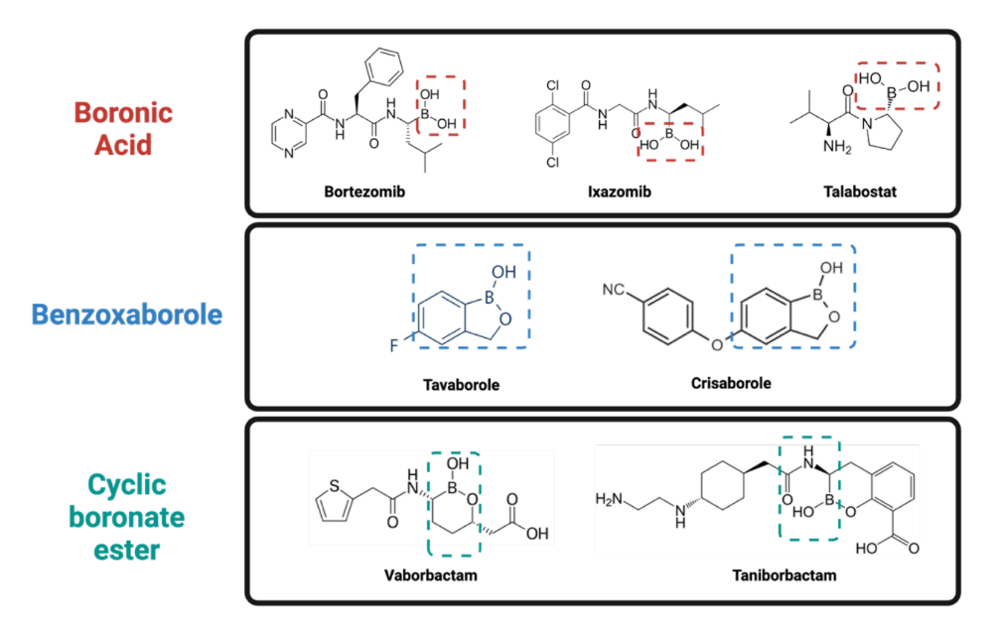

Project Boron
Current approved or clinical boron-based compounds have a pattern in which they contain three specific boron moieties; boronic acid, benzoxaborole, and cyclic boronate ester. Although these groups are shown to have a range of anti-fungal, anti-bacterial, and anti-cancer effects, to expand the boron toolkit, our team investigates other moieties like boryl difluoride (-BF2), diphenylboryl (-BPh2), and boronic acid catechol ester (-Bcat).
To explore these different boron moieties, a boron compound library was first developed by Kathleen May. The boron moieties were added to different combinations of existing scaffolding. It was comprised of either benzothiazole (NOS-) or benzoxazole (K-) and then paired with a nitro (-NO2), methoxy (-OMe), phenyl (-Ph), trifluoromethyl (-pCF3), or 4-pyridine carboxylic acid (-4PCA). This resulted in 43 novel boron compounds.
A two-phase drug screen was performed by Mohammed Ayan Chhipa with the help of Parastoo Golzarian, Taiba Dawood and Shirin Kalavi. Three models were used in the drug test; Schizosaccharomyces pombe (S. pombe), Escherichia coli (E.coli) and four mammalian cell lines (three pancreatic cancers; PANC1, BxPC3, and HPAC, and one noncancerous line; RPE). The first phase involved a 3-dose screen of the various boron compounds in the three models to eliminate any compounds that did not exhibit any cell proliferation properties. S.pombe and E.coli were screened at concentrations of 10, 100, and 1000 μM. The mammalian cells were screened at lower concentrations of 5, 50, and 500 μM. Effective compounds were ranked based on their ability to reduce cell proliferation by 50% and at their effective concentration. The second phase was a more in-depth look at the short-listed compounds; a 12-dose microdilution assay was done to determine the half-maximal inhibitory concentration value at 50% (IC50) and the cell’s viability was also assessed. The mechanism of these drugs was partially explored in S.pombe, as Fang et al. (2012) found in a genome-wide screen for sensitivity to common anti-fungal drugs that mutants were more sensitive had mutations in ergosterol biosynthesis, ribosome biosynthesis, membrane trafficking and more. Thus, the ergosterol levels were examined in S.pombe. We found compounds that had varying proliferation inhibition effects. In particular, we found a boron compound that strongly inhibited S.pombe inhibition at an IC50 of 4 μM with a mechanism to decrease ergosterol levels, disrupting the fungal cell membrane integrity. For E.coli the most effective compound had an IC50 of 32 μM. There were also compounds that were effective in inhibiting specific cancer cell proliferation, while the non-cancerous cell line was not affected. In particular, one compound was shown to have an IC50 of ~9-25 μM in PANC1, BxPC3, and HPAC cancerous cell lines but did not impact the RPE non-cancerous cell line.
Our future directions are to further elucidate the mechanism of ergosterol depletion, and further assess the mechanism of the other model.